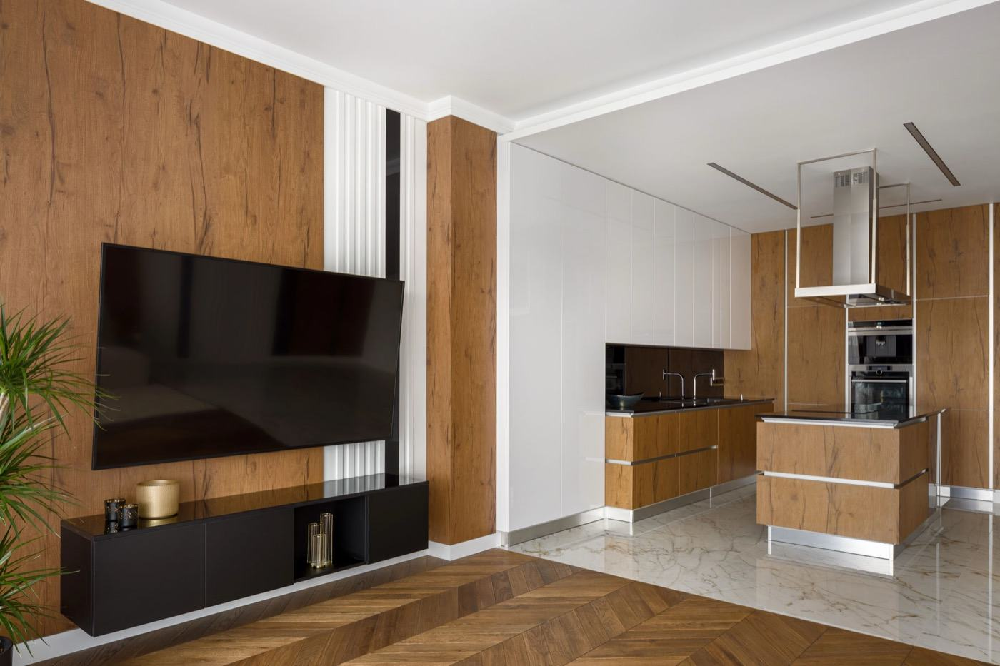
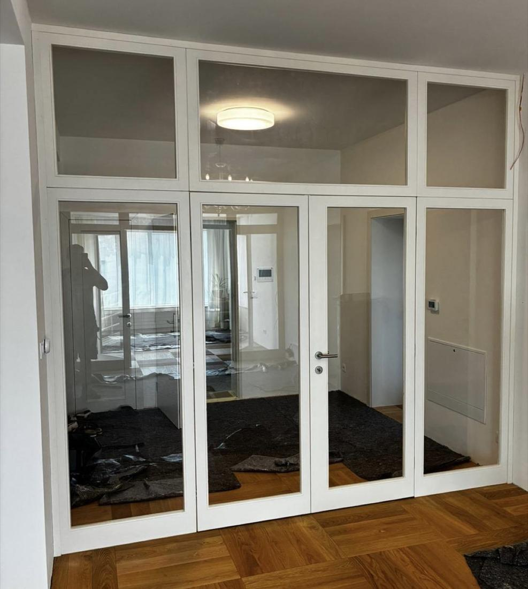
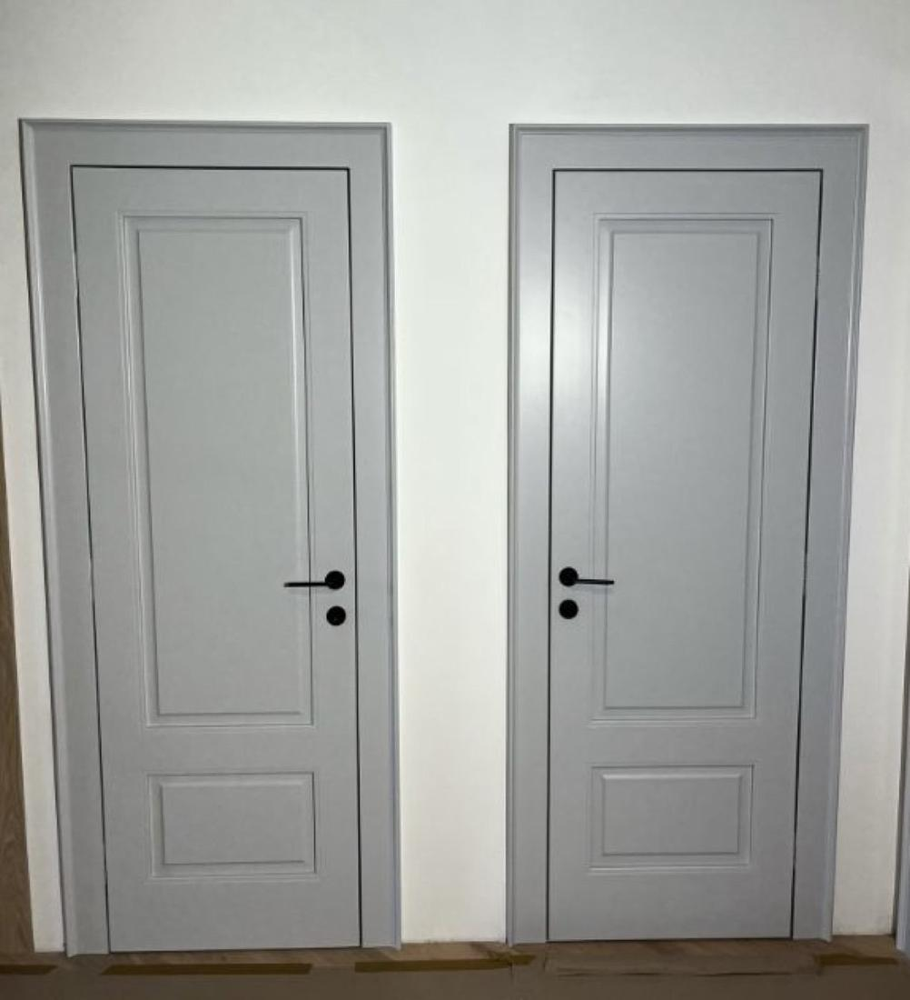
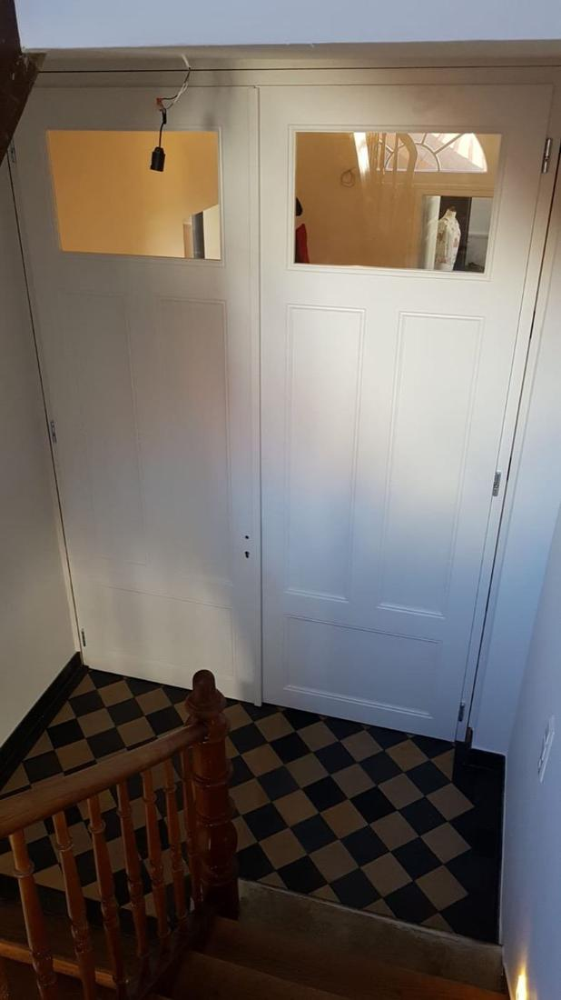
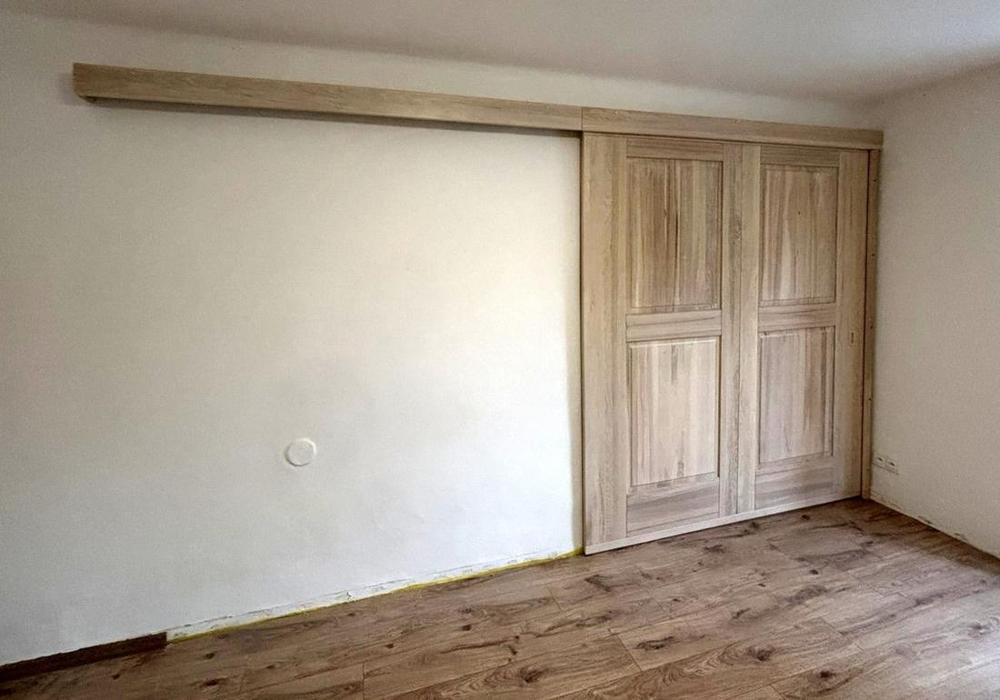
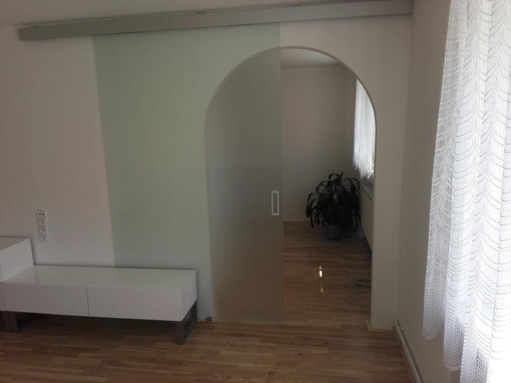
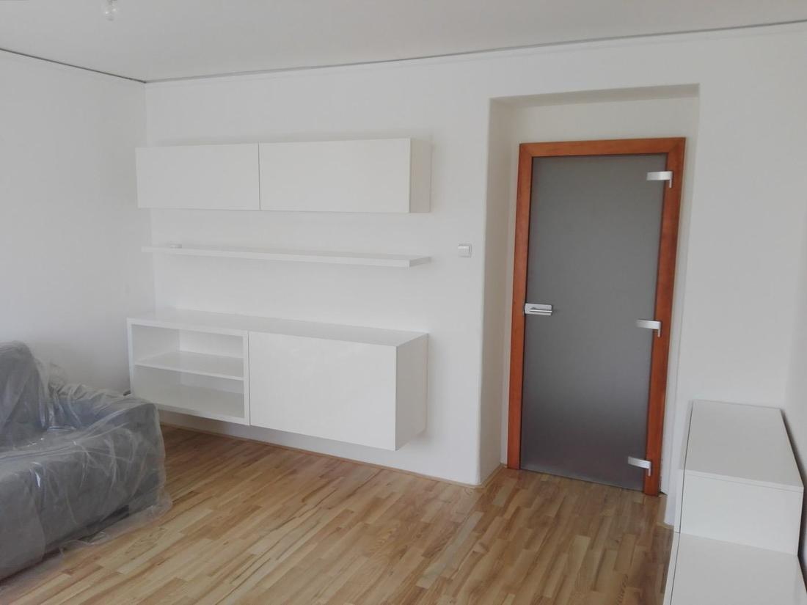
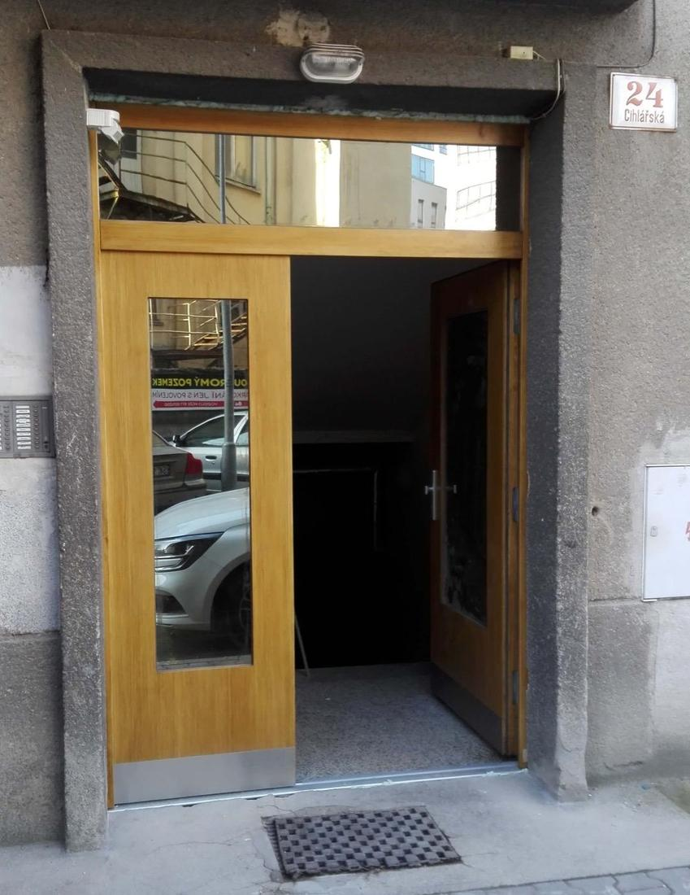

Dveře, obklady a obložky
Vyrábíme dveře, posuvné stěny, dřevěné obklady a obložky. Odstín sladíme s ostatním dřevem v interiéru.

Vnitřní dveře z masivu nevrzají ani po letech a nejsou z papírové voštiny. Vyrobíme křídlové, dvoukřídlé, skládací i posuvné dveře a k nim obložkové zárubně, vše včetně montáže.
Dřevěné obklady stěn a obložky okolo dveří, oken nebo stoupaček dodají interiéru teplo a klid. Obkládáme stěny obýváků, schodiště i firemní jednací místnosti.
U posuvných dveří myslíme i na bezpečnost a spolehlivost pojezdu. Vždy doporučíme takové řešení, jaké bychom vyrobili sami pro sebe.
Venkovní vchodové dveře a vrata vyrábíme ve stylu domu, chaty nebo stodoly – celodřevěné nebo se skleněnou výplní, která splňuje současné energetické standardy.
Co pro vás vyrobíme
- Vnitřní dveře z masivu, dvoukřídlé a skládací
- Posuvné dveře a posuvné stěny
- Prosklené dveře a stěny
- Dřevěné obklady stěn
- Obložky dveří, oken a stoupaček
- Venkovní vchodové dveře a vrata
- Odstín
- Sladíme se schodištěm a podlahou
- Kování
- Spolehlivé panty a pojezdové systémy
- Montáž
- Dveře i zárubně namontujeme
Z naší dílny















Poptat zakázku
Napište nám, kam nábytek přijde, jaké má mít přibližné rozměry a kdy ho potřebujete. Ozveme se s možnostmi, odhadem ceny a termínu.